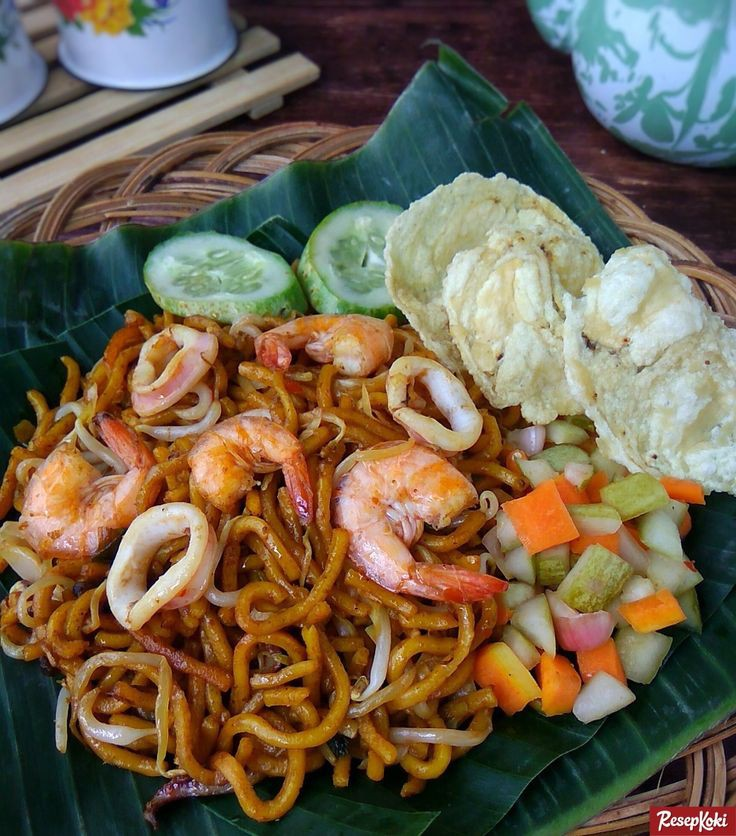

Adalah masakan mi pedas khas Aceh di Indonesia. Mi kuning tebal dengan irisan daging sapi, daging kambing atau makanan laut (udang dan cumi) disajikan dalam sup sejenis kari yang gurih dan pedas. Mi aceh biasanya ditaburi dengan bawang goreng dan disajikan bersama emping, potongan bawang merah, mentimun, dan jeruk nipis. Mi aceh biasanya disajikan dalam tiga bentuk yaitu mi kuah, mi goreng basah, dan mi goreng kering. Di balik itu mi aceh menunjukkan sejarah budaya masyarakat Aceh dengan mendapat banyak pengaruh budaya asing yang membentuk wilayah Aceh. Kuah yang berbahan dasar kari adalah pengaruh masakan India, sedangkan mie adalah pengaruh masakan Tionghoa. .
Resep Mie Aceh
5OO Gram mie basah
150 Gram udang segar yang sudah dikupas dan dibuang kulitnya
150 Gram daging (Sapi atau Kambing) yang sudah direbus sebelumnya dan kemudian diiris kecil
1 Buah tomat potong panjang berbentuk segitiga
4 siung bawang putih iris tipis
100 Gram kol putih, iris halus
25 Gram daun bawang, iris halus
10 Gram daun seledri, iris halus
10 Gram daun seledri, iris halus
600 ml kaldu Sapi
2 Sendok makan kecap manis
2 sendok makan kecap asin
4 Sendok makan minyak goreng